Disciplinas
-
BANCO DE DADOS-T01-2024-1 Concluído
Materiais
Vídeo 4 - Bancos de Dados - Aula 08 – Mapeamento MER → Relacional - Parte III. sendProfessor ministrante: Sarajane Peres.
Conteúdo
Mapeamento MER → Relacional.
Relacionamentos n-ários, especialização-generalização, agregação.
Mapeando tipos relacionamento n-ários:
- Para cada tipo relacionamento n-ário, em que n > 2, crie uma nova relação S para representá-lo;
- Inclua como chaves estrangeiras em S, as chaves primárias das relações que representam os tipos entidade participantes do relacionamento;
- Inclua qualquer atributos simples, ou componentes simples de atributos compostos, como atributos de S;
- A chave primária de S é, usualmente, a combinação de todas as chaves estrangeiras em S;
- Se a cardinalidade em qualquer participação de um tipo entidade é 1, então a chave primária de S não não deveria incluir a chave estrangeira que referencia a relação que representa esse tipo entidade.
Exemplo 1:

Mapeamento:
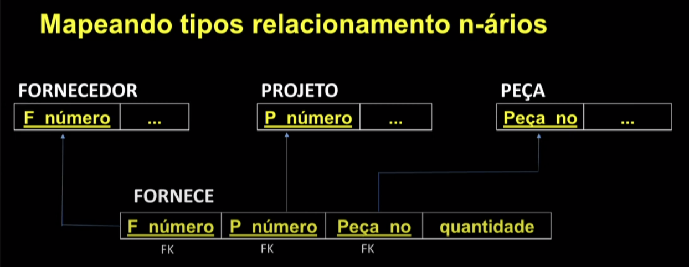Cadastro de Dados:
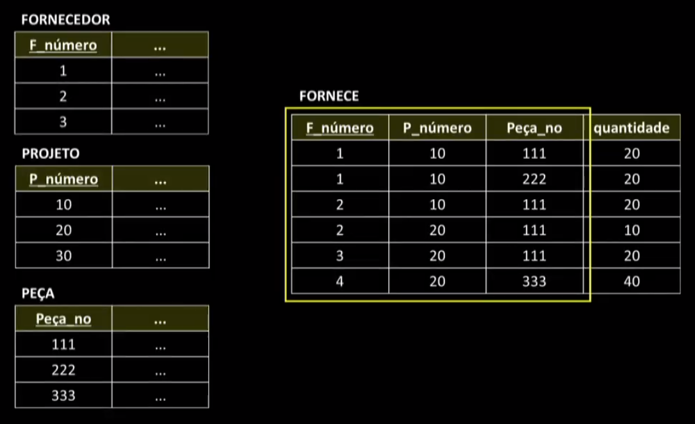Exemplo 2:
Mapeamento:
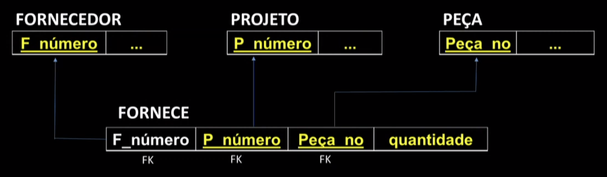Cadastro de Dados:
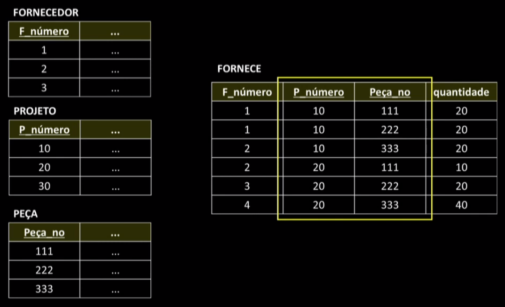Mapeando especializações ou generalizações:
- Converter cada especialização com m subclasses {S₁, S2, ..., Sm} e a superclasse C, cujos atributos são {k, a₁, ...., an} e a chave primária é k, em relações usando uma das seguintes opções:
- 1. Múltiplas relações: superclasse e subclasses;
- 2. Múltiplas relações: apenas subclasses;
- 3. Relação única com um único atributo tipo;
- 4. Relação única com vários atributos tipo.
- Crie uma relação L para representar a superclasse C, e inclua em Los atributos Atrb(L) (k,a,a, = ..., an} e ea chave prímária PK(L) = k;
- Crie uma relação Li para cada subclasse S₁, 1 <= i <= m, com os atributos Atrb(L₁) = {k} U {atrb(S)} e faça PK(L) = k;
Esta opção funciona para qualquer tipo de especialização (total ou parcial, com restrição de disjunção ou de sobreposição).
Ex. 1: 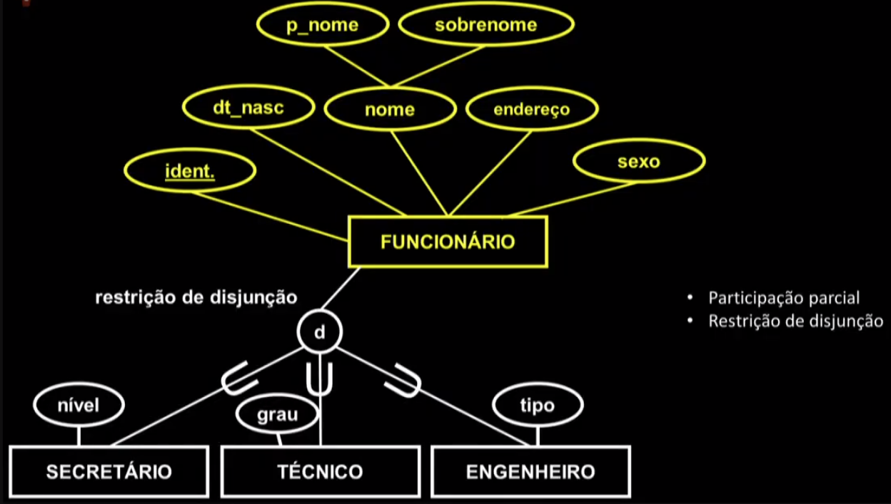 Mapeamento modelo relacional: 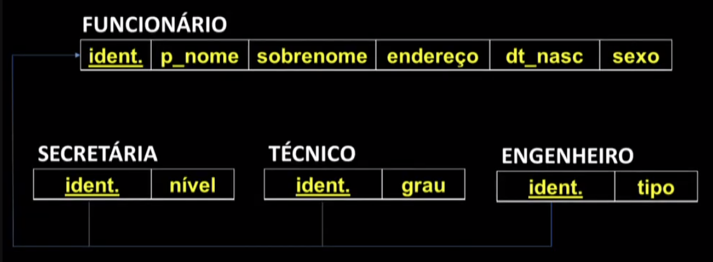 Ex. 2:Modelagem Alternativa.
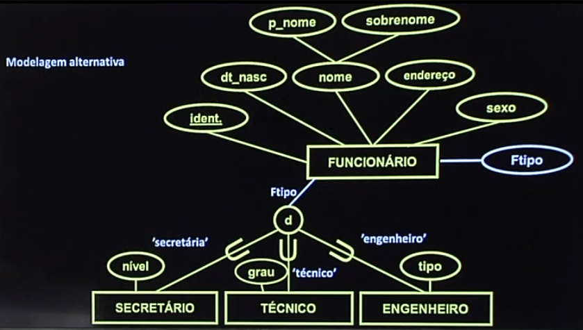Mapeamento:
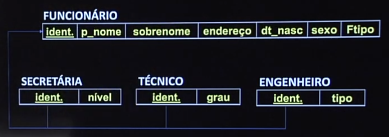 Múltiplas relações: apenas subclasses;Crie uma relação L¡ para cada subclasse S₁, 1 <= i <= m, com os atributos Atrb(L₁) = {atributos de S;} U {k, a₁, ..., an} e PK(L₁) = k;
- Esta opção funciona apenas para especializações de participação total.
- E é recomendada para especializações com restrição de disjunção. Se a especialização é de restrição de sobreposição, a mesma entidade individual pode ser duplicada em várias relações.
Exemplo de especialização com participação total:
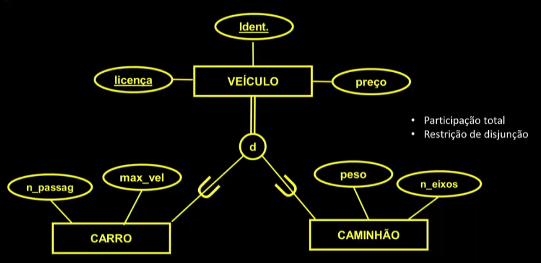Mapeamento:
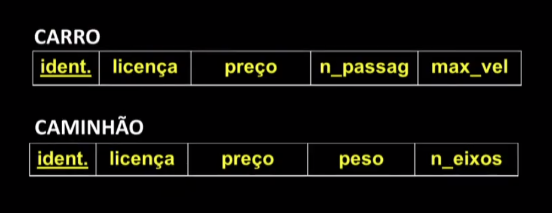 Relação única com um único atributo tipo;Crie uma única relação L com os atributos Atrb(L) = {k, a₁, ..., an} U {atributos de S₁} U... U {atributos de Sm} U {t} e PK{L} = k.
O atributo té chamado atributo tipo (ou discriminador) e seu valor indica a subclasse à qual cada tupla pertence, se ela pertencer a alguma subclasse.
- Esta opção funciona somente para especializações cujas subclasses são disjuntas.
- Esta opção pode gerar muitos valores NULL se as subclasses tiverem muitos atributos específicos.
Mapeamento:
Relação única com vários atributos tipo.Crie uma única relação L com os atributos Atrb(L) = {k, a₁, ..., an} U {atributos de S₁} U... U atributos de Sm} U {t1, t2, ..., tm} e PK(L) = k.
Cada t₁, 1 <= i <= m, é um atributo do tipo booleano que indica se uma tupla pertence a uma subclasse S₁.
- Esta opção é usada para uma especialização com restrição de sobreposição.
- Ela também funciona para a restrição de disjunção.
Exemplo:
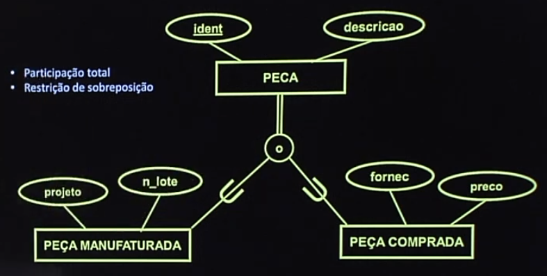Mapeamento:
Mapeando Agregações.
Valem as mesmas regras.
Porém, ao mapear o tipo relacionamento do qual a abstração de agregação participa, usualmente, cria-se uma nova relação que recebe uma chave primária adequada proveniente do mapeamento obtido para o conteúdo da agregação e a chave primária do outro tipo entidade participante do relacionamento.
Estes slides estão baseados na bibliografia:
Mapeamento MER → Relacional Parte III: relacionamentos n-ários, especialização-generalização, agregação.